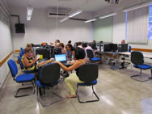

Sobre a FATEC-BS
A Faculdade de Tecnologia da Baixada Santista - Rubens Lara (FATEC/BS) situa-se na cidade de Santos, no litoral da Baixada Santista e foi implantada em julho de 1987 como uma unidade do Centro Estadual de Educação Tecnológica Paula Souza, instituição de ensino Superior.
O primeiro curso a ser oferecido foi o de Tecnologia em Processamento de Dados, reconhecido através da Portaria 354, de 9 de março de 1994.